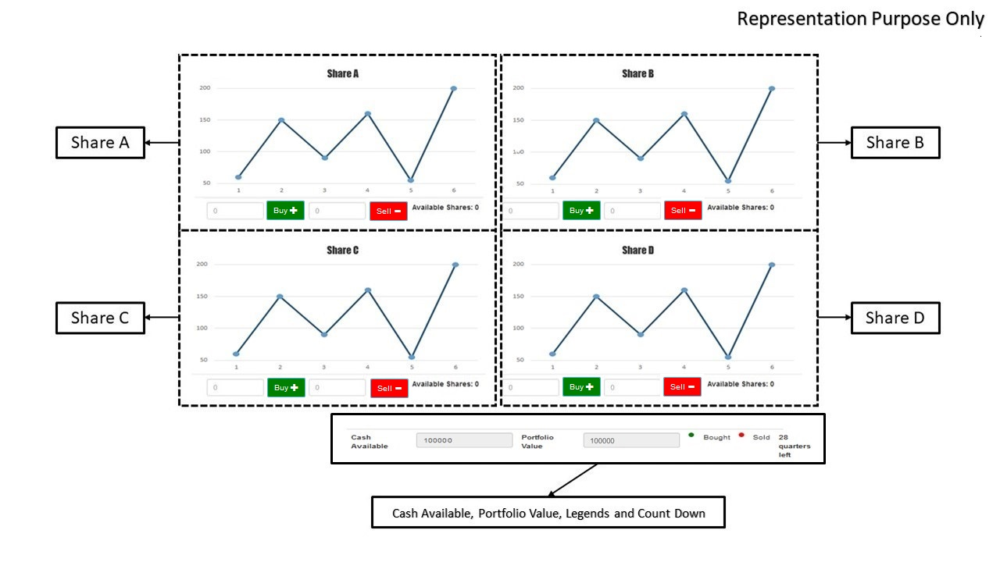
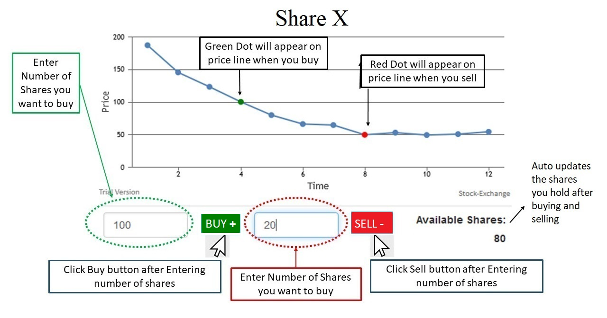
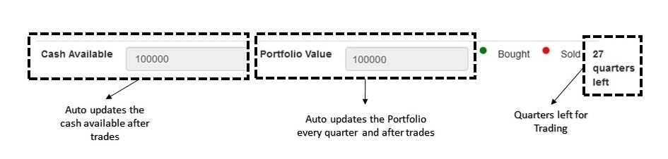
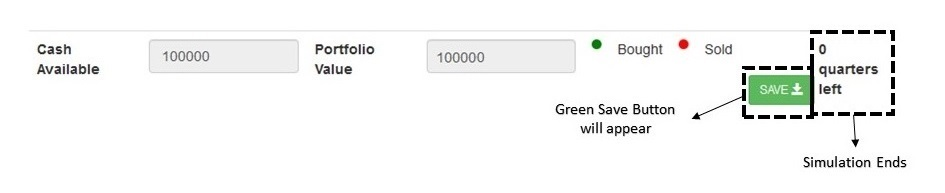
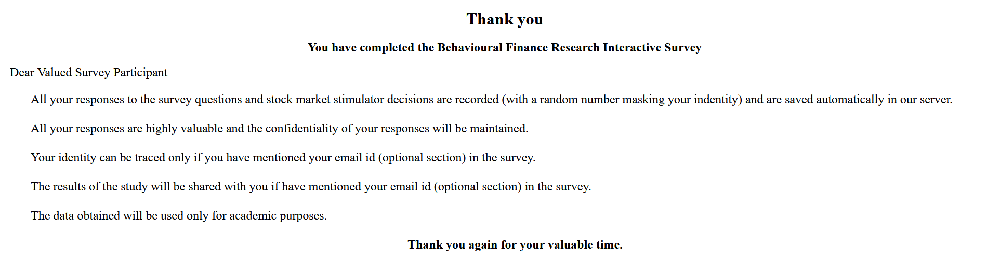

Instructions First!
- This stock market simulator consists of four stocks that we call A, B, C, and D. You have already chosen these stocks based on your stock picking expertise and investment style. Currently, you own 100 stocks each of A, B, C, and D. You are also given a virtual currency of 1,00,000 units as your initial investment to trade more.This simulator enables you to trade (buy/sell) based on the price movement of the four stocks. This entire exercise will take you 7 minutes to finish.
- The y-axis shows the share price, the x-axis shows the time: 28 quarters in total. You need to observe the stocks for three quarters to identify the historical price pattern of all four stocks. Each quarter has a duration of 15 seconds.
- A pop-up alert will appear at the beginning of the 4th quarter, and you have to Click ok to start buy/selling stocks. Your buy/sell trades placed from the fourth quarter will be recorded as input for analysis.
- The number of shares you wish to buy or sell must be entered into boxes to the left of the green color BUY Button and red color SELL button. You need to enter the number of shares you wish to buy and sell for each stock separately. After entering the number of shares, click the green color BUY Button and red color SELL button.
- When a buy order is placed for any share, a green color reference point appears on the trend line showing the price at which it was bought. Similarly, a red color reference point appears when it is a sell order.
- If the required amount of cash is not available at the time of purchase, you will get an error message saying, "Not enough money! Can't buy."
- Below the price chart of stocks, you are provided with the cash balance, portfolio balance, color legends, and count down of quarters left in the simulation exercise.
- The stock price trend will stop at quarter 28, and you will see a pop-up message. Click OK to make the save button appear at the bottom.
- A Green Save button will appear at the bottom. Click the green SAVE button to save all your survey responses and buy and sell trade actions. All your response will be saved automatically. You will then proceed to the final "Thank you, Page."
- Now Click the below NEXT button to start the simulation.




